Bakery and Delivery Website
I emphasized the simplicity of the drop-down menu and the large photos. The key functionality is the content is eye-catching but easy to absorb. The goal I had in mind while designing the website was to influence the user's food craving. The website is responsive down to mobile size and features a PHP delivery form.
Visit Website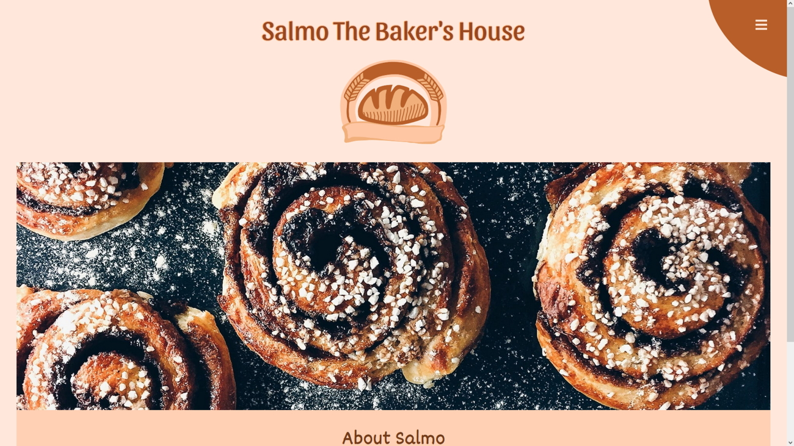
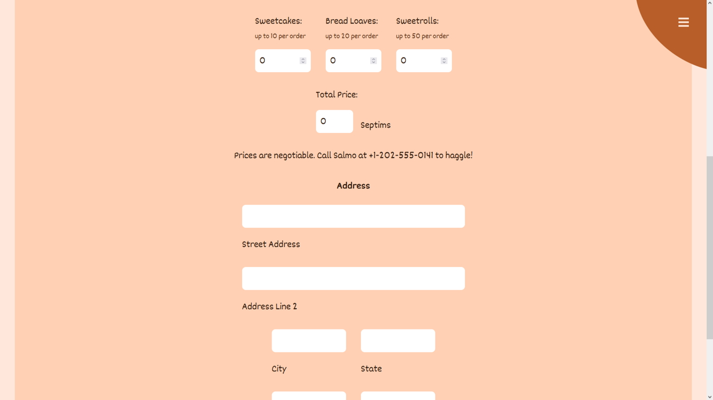
Soap Business Blog
I emphasized the blog design with a left-side menu. The key functionality is the post pages are easy to navigate. The goal I had in mind while designing the website was to influence the user's imagination of soap aromas. The website is responsive down to mobile size and features a mailto contact form. It was originally created in WordPress and then recreated without a CMS.
Visit Website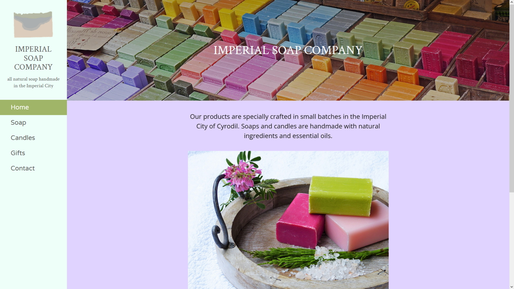
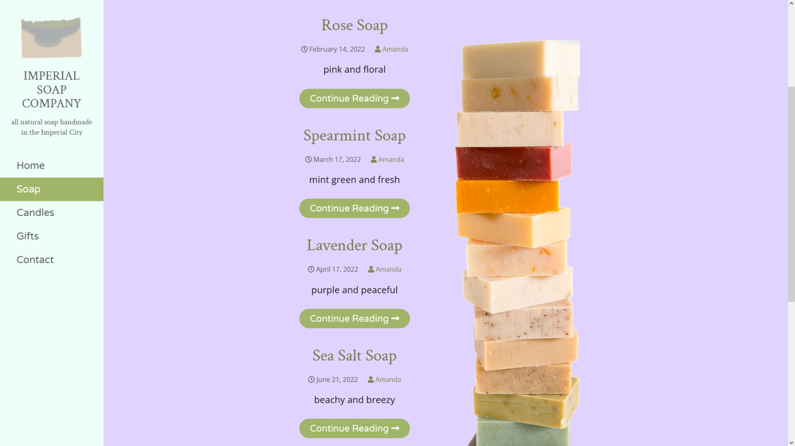
Museum Website
I emphasized different museum departments by giving each page a unique design. The key functionality is the content's user-interactivity. The goal I had in mind while designing the website was to create complex CSS float and flexbox layouts. The website is responsive down to mobile size and features a jQuery modal image gallery of minerals.
Visit Website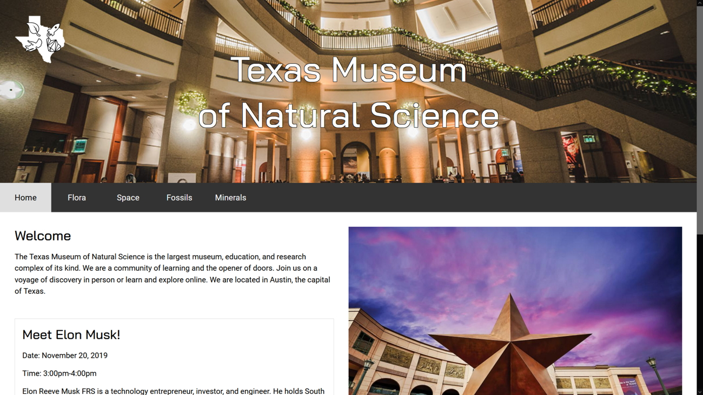
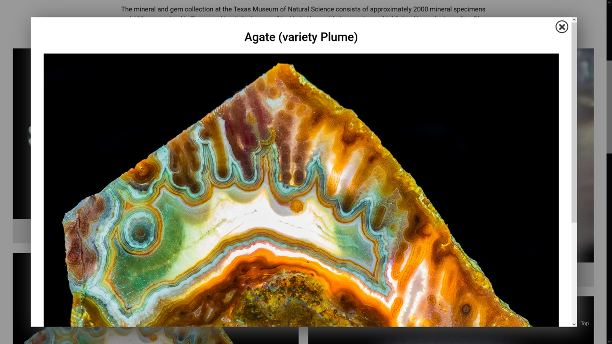
Video Game Wiki
I emphasized all the HTML5 semantic tags. The key functionality is the PHP registration and login system. The goal I had in mind while designing the website was to make the transparent image background and dark color scheme contrast well with the text. The website is a responsive desktop size and features an embedded YouTube video of gameplay.
Visit Website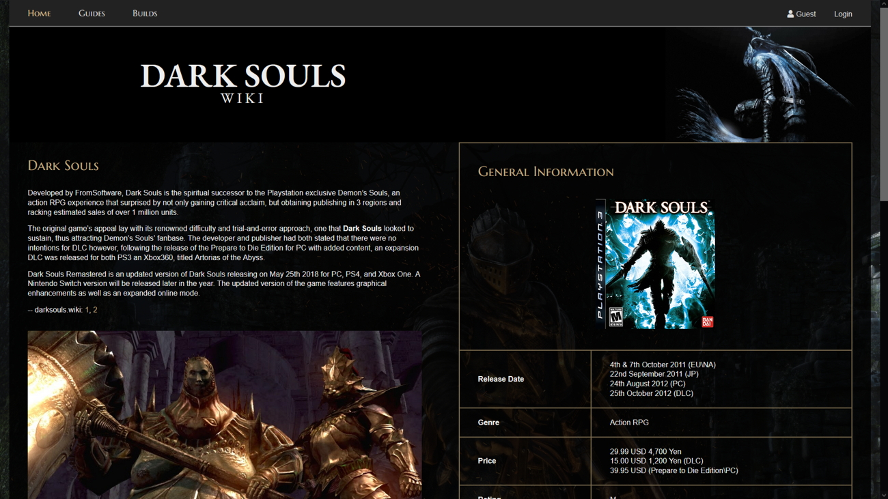
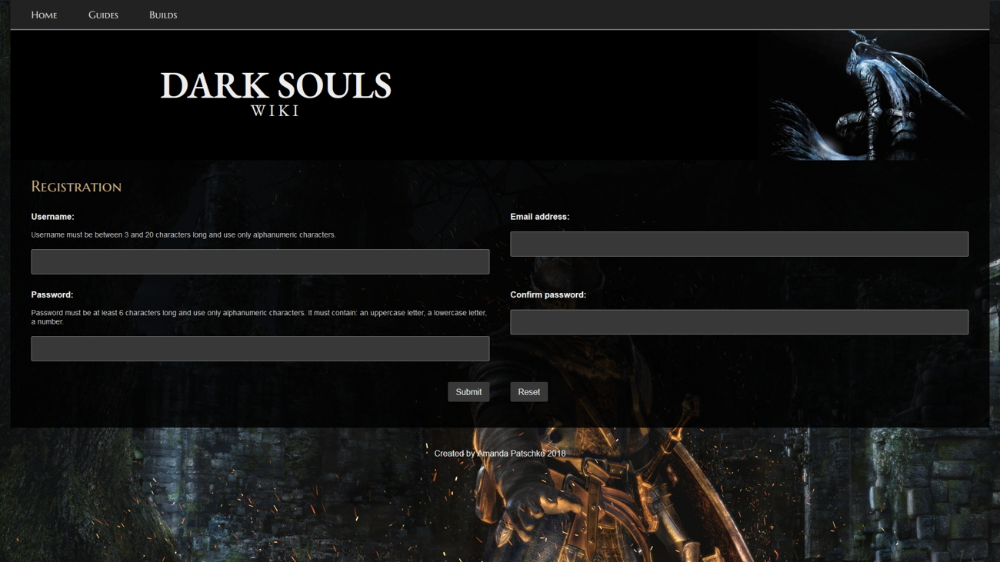
Spa Business Website
I emphasized the loading animation on the home page. The key functionality is the fixed drop-down menu button makes navigation easy. The goal I had in mind while designing the website was to create an asymmetrical layout using absolute positioning. The website is a responsive desktop size and features an embedded Google Map API of the business location.
Visit Website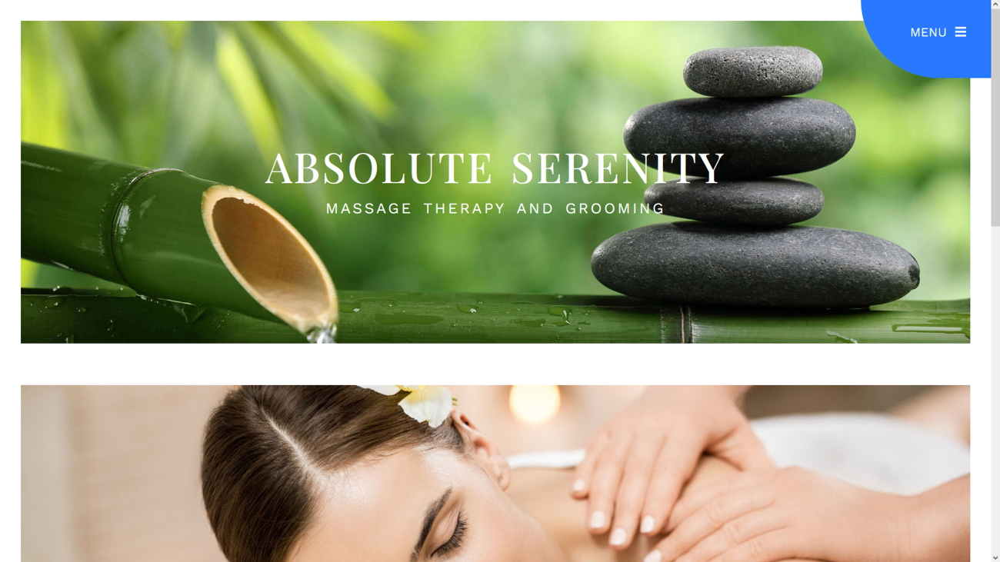
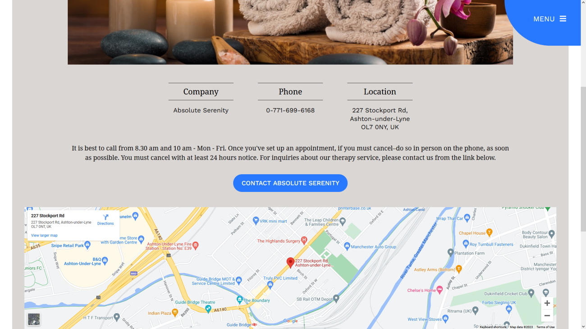
Ice Cream Webstore
I emphasized the shopping cart by linking to it at the top and bottom of the shop pages. The key functionality is the PHP session, form input elements, and item/price calculations. The goal I had in mind while designing the website was to create a shopping cart and connect it to an SQL database. The website is a responsive desktop size and features a JavaScript interactive button on the home page.
Visit Website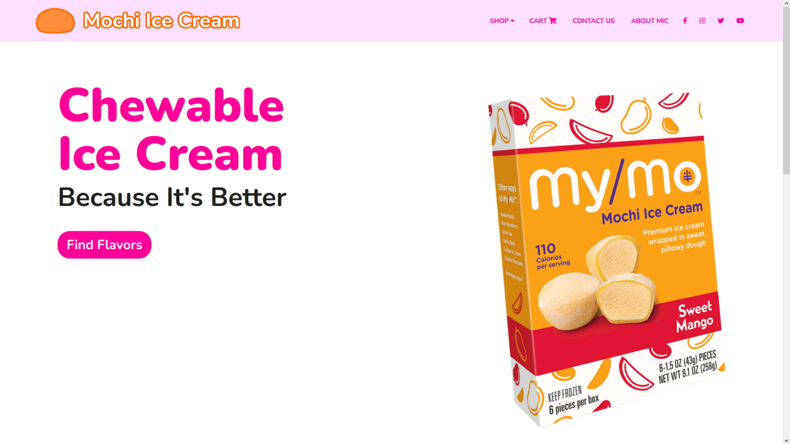
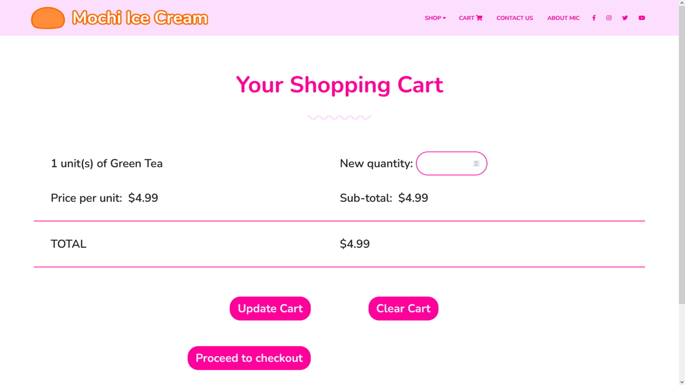